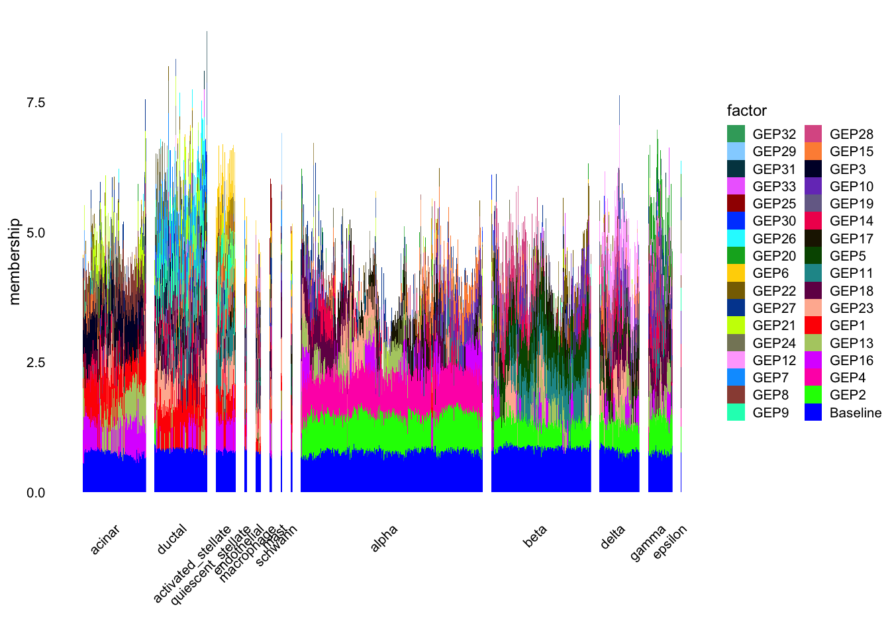
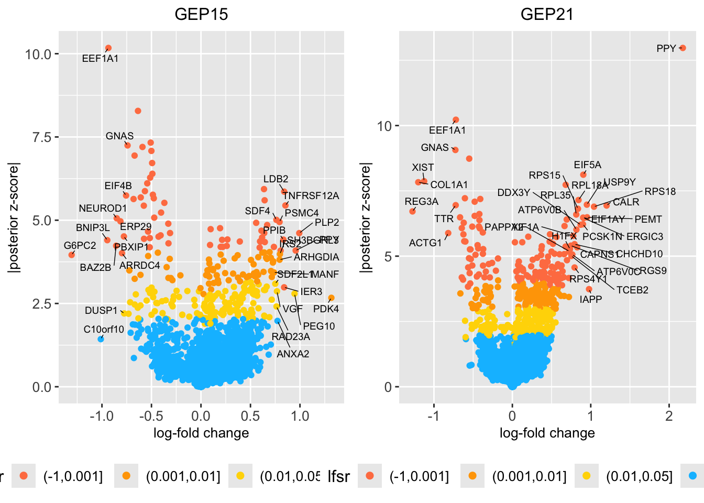

pancreas_celseq2_gbcd
Matthew Stephens
2025-07-02
Last updated: 2025-07-03
Checks: 7 0
Knit directory:
single-cell-jamboree/analysis/
This reproducible R Markdown analysis was created with workflowr (version 1.7.1). The Checks tab describes the reproducibility checks that were applied when the results were created. The Past versions tab lists the development history.
Great! Since the R Markdown file has been committed to the Git repository, you know the exact version of the code that produced these results.
Great job! The global environment was empty. Objects defined in the global environment can affect the analysis in your R Markdown file in unknown ways. For reproduciblity it’s best to always run the code in an empty environment.
The command set.seed(1) was run prior to running the
code in the R Markdown file. Setting a seed ensures that any results
that rely on randomness, e.g. subsampling or permutations, are
reproducible.
Great job! Recording the operating system, R version, and package versions is critical for reproducibility.
Nice! There were no cached chunks for this analysis, so you can be confident that you successfully produced the results during this run.
Great job! Using relative paths to the files within your workflowr project makes it easier to run your code on other machines.
Great! You are using Git for version control. Tracking code development and connecting the code version to the results is critical for reproducibility.
The results in this page were generated with repository version e0a09e9. See the Past versions tab to see a history of the changes made to the R Markdown and HTML files.
Note that you need to be careful to ensure that all relevant files for
the analysis have been committed to Git prior to generating the results
(you can use wflow_publish or
wflow_git_commit). workflowr only checks the R Markdown
file, but you know if there are other scripts or data files that it
depends on. Below is the status of the Git repository when the results
were generated:
Ignored files:
Ignored: .Rhistory
Ignored: .Rproj.user/
Ignored: analysis/.RData
Ignored: analysis/figure/
Untracked files:
Untracked: analysis/Rplot.pdf
Untracked: analysis/fit_pancreas_celseq2_gbcd.R
Untracked: analysis/fit_pancreas_celseq2_gbcd.Rout
Untracked: analysis/fit_pancreas_celseq2_snmf_k100.R
Untracked: analysis/pancreas_celseq2_snmf_k100.RData
Untracked: analysis/pancreas_celseq2_snmf_ms.Rmd
Untracked: output/pancreas_celseq2_gbcd.RData
Untracked: output/pancreas_celseq2_snmf_k100.RData
Unstaged changes:
Modified: single-cell-jamboree.Rproj
Note that any generated files, e.g. HTML, png, CSS, etc., are not included in this status report because it is ok for generated content to have uncommitted changes.
These are the previous versions of the repository in which changes were
made to the R Markdown (analysis/pancreas_celseq2_gbcd.Rmd)
and HTML (docs/pancreas_celseq2_gbcd.html) files. If you’ve
configured a remote Git repository (see ?wflow_git_remote),
click on the hyperlinks in the table below to view the files as they
were in that past version.
| File | Version | Author | Date | Message |
|---|---|---|---|---|
| Rmd | e0a09e9 | Matthew Stephens | 2025-07-03 | workflowr::wflow_publish("pancreas_celseq2_gbcd.Rmd") |
| html | 190790a | Matthew Stephens | 2025-07-03 | Build site. |
| Rmd | 4d8c6f6 | Matthew Stephens | 2025-07-03 | workflowr::wflow_publish("analysis/pancreas_celseq2_gbcd.Rmd") |
library(gbcd)Loading required package: ebnmlibrary(flashier)
library(fastTopics)
library(Matrix)
library(ggplot2)
library(cowplot)
library(ggrepel)
library(RcppML)RcppML v0.5.5 using 'options(RcppML.threads = 0)' (all available threads), 'options(RcppML.verbose = FALSE)'Introduction
I want to look at the gbcd fit to the Pancreas celseq2 data. The
First I load the data and select the CEL-seq2 data, which should select 2,285 cells. Then I remove genes that are expressed in fewer than 10 cells, and compute the shifted log counts.
load("../data/pancreas.RData")
set.seed(1)
# Select the CEL-seq2 data (Muraro et al, 2016).
# This should select 2,285 cells.
i <- which(sample_info$tech == "celseq2")
sample_info <- sample_info[i,]
counts <- counts[i,]
# Remove genes that are expressed in fewer than 10 cells.
x <- colSums(counts > 0)
j <- which(x > 9)
counts <- counts[,j]
# Compute the shifted log counts.
a <- 1
s <- rowSums(counts)
s <- s/mean(s)
Y <- MatrixExtra::mapSparse(counts/(a*s),log1p)
#randomly divide rows of Y into 2
subset = sample(1:nrow(Y), nrow(Y)/2)
#dat <- Matrix::tcrossprod(Y)/ncol(Y) # cell by cells covariance matrixNow load the gbcd fits created by
fit_pancreas_celseq2_gbcd.R. This loads 3 fits: fit.gbcd is
the whole dataset and fit.gbcd.1 and fit.gbcd2 are fits to two random
halves of the data (subset and its complement).
load("../output/pancreas_celseq2_gbcd.RData")Plot the structure plot for the whole fit:
sample_info <- transform(sample_info,celltype = factor(celltype))
celltype <- sample_info$celltype
celltype <-
factor(celltype,
c("acinar","ductal","activated_stellate","quiescent_stellate",
"endothelial","macrophage","mast","schwann","alpha","beta",
"delta","gamma","epsilon"))
L <- fit.gbcd$L
p1 <- structure_plot(L,grouping = celltype,
gap = 20,perplexity = 70,n = Inf) +
labs(y = "membership",fill = "factor",color = "factor")
plot(p1)
| Version | Author | Date |
|---|---|---|
| 190790a | Matthew Stephens | 2025-07-03 |
Then two other structure plots:
L.1 <- fit.gbcd.1$L
p1 <- structure_plot(L.1,grouping = celltype[subset],
gap = 20,perplexity = 70,n = Inf) +
labs(y = "membership",fill = "factor",color = "factor")Running tsne on 145 x 34 matrix.Read the 145 x 34 data matrix successfully!
Using no_dims = 1, perplexity = 47.000000, and theta = 0.100000
Computing input similarities...
Building tree...
Done in 0.01 seconds (sparsity = 0.991201)!
Learning embedding...
Iteration 50: error is 48.523648 (50 iterations in 0.01 seconds)
Iteration 100: error is 46.327139 (50 iterations in 0.01 seconds)
Iteration 150: error is 46.759215 (50 iterations in 0.01 seconds)
Iteration 200: error is 47.058566 (50 iterations in 0.01 seconds)
Iteration 250: error is 47.581707 (50 iterations in 0.01 seconds)
Iteration 300: error is 1.182205 (50 iterations in 0.01 seconds)
Iteration 350: error is 0.769645 (50 iterations in 0.01 seconds)
Iteration 400: error is 0.721649 (50 iterations in 0.01 seconds)
Iteration 450: error is 0.721644 (50 iterations in 0.01 seconds)
Iteration 500: error is 0.721644 (50 iterations in 0.00 seconds)
Iteration 550: error is 0.721644 (50 iterations in 0.00 seconds)
Iteration 600: error is 0.721644 (50 iterations in 0.00 seconds)
Iteration 650: error is 0.721644 (50 iterations in 0.00 seconds)
Iteration 700: error is 0.721644 (50 iterations in 0.00 seconds)
Iteration 750: error is 0.721644 (50 iterations in 0.00 seconds)
Iteration 800: error is 0.721644 (50 iterations in 0.00 seconds)
Iteration 850: error is 0.721644 (50 iterations in 0.00 seconds)
Iteration 900: error is 0.721644 (50 iterations in 0.01 seconds)
Iteration 950: error is 0.721644 (50 iterations in 0.00 seconds)
Iteration 1000: error is 0.721644 (50 iterations in 0.00 seconds)
Fitting performed in 0.12 seconds.Running tsne on 122 x 34 matrix.Read the 122 x 34 data matrix successfully!
Using no_dims = 1, perplexity = 39.000000, and theta = 0.100000
Computing input similarities...
Building tree...
Done in 0.01 seconds (sparsity = 0.987503)!
Learning embedding...
Iteration 50: error is 49.450195 (50 iterations in 0.01 seconds)
Iteration 100: error is 52.708992 (50 iterations in 0.01 seconds)
Iteration 150: error is 50.761080 (50 iterations in 0.01 seconds)
Iteration 200: error is 50.319639 (50 iterations in 0.01 seconds)
Iteration 250: error is 50.544918 (50 iterations in 0.01 seconds)
Iteration 300: error is 0.926675 (50 iterations in 0.01 seconds)
Iteration 350: error is 0.691400 (50 iterations in 0.01 seconds)
Iteration 400: error is 0.690877 (50 iterations in 0.00 seconds)
Iteration 450: error is 0.690876 (50 iterations in 0.00 seconds)
Iteration 500: error is 0.690876 (50 iterations in 0.00 seconds)
Iteration 550: error is 0.690876 (50 iterations in 0.00 seconds)
Iteration 600: error is 0.690876 (50 iterations in 0.00 seconds)
Iteration 650: error is 0.690876 (50 iterations in 0.00 seconds)
Iteration 700: error is 0.690876 (50 iterations in 0.00 seconds)
Iteration 750: error is 0.690876 (50 iterations in 0.00 seconds)
Iteration 800: error is 0.690876 (50 iterations in 0.00 seconds)
Iteration 850: error is 0.690876 (50 iterations in 0.00 seconds)
Iteration 900: error is 0.690876 (50 iterations in 0.00 seconds)
Iteration 950: error is 0.690876 (50 iterations in 0.00 seconds)
Iteration 1000: error is 0.690876 (50 iterations in 0.00 seconds)
Fitting performed in 0.09 seconds.Running tsne on 45 x 34 matrix.Read the 45 x 34 data matrix successfully!
Using no_dims = 1, perplexity = 13.000000, and theta = 0.100000
Computing input similarities...
Building tree...
Done in 0.00 seconds (sparsity = 0.946173)!
Learning embedding...
Iteration 50: error is 57.820828 (50 iterations in 0.00 seconds)
Iteration 100: error is 58.245725 (50 iterations in 0.00 seconds)
Iteration 150: error is 61.592642 (50 iterations in 0.00 seconds)
Iteration 200: error is 56.011608 (50 iterations in 0.00 seconds)
Iteration 250: error is 59.775657 (50 iterations in 0.00 seconds)
Iteration 300: error is 3.131747 (50 iterations in 0.00 seconds)
Iteration 350: error is 2.899446 (50 iterations in 0.00 seconds)
Iteration 400: error is 3.118990 (50 iterations in 0.00 seconds)
Iteration 450: error is 2.905382 (50 iterations in 0.00 seconds)
Iteration 500: error is 3.323175 (50 iterations in 0.00 seconds)
Iteration 550: error is 3.556019 (50 iterations in 0.00 seconds)
Iteration 600: error is 3.144851 (50 iterations in 0.00 seconds)
Iteration 650: error is 3.033299 (50 iterations in 0.00 seconds)
Iteration 700: error is 2.979767 (50 iterations in 0.00 seconds)
Iteration 750: error is 2.971906 (50 iterations in 0.00 seconds)
Iteration 800: error is 2.960941 (50 iterations in 0.00 seconds)
Iteration 850: error is 2.941026 (50 iterations in 0.00 seconds)
Iteration 900: error is 2.903733 (50 iterations in 0.00 seconds)
Iteration 950: error is 2.786969 (50 iterations in 0.00 seconds)
Iteration 1000: error is 1.153554 (50 iterations in 0.00 seconds)
Fitting performed in 0.02 seconds.Running tsne on 420 x 34 matrix.Read the 420 x 34 data matrix successfully!
Using no_dims = 1, perplexity = 70.000000, and theta = 0.100000
Computing input similarities...
Building tree...
Done in 0.05 seconds (sparsity = 0.620612)!
Learning embedding...
Iteration 50: error is 49.892168 (50 iterations in 0.03 seconds)
Iteration 100: error is 49.892168 (50 iterations in 0.03 seconds)
Iteration 150: error is 49.892168 (50 iterations in 0.03 seconds)
Iteration 200: error is 49.892168 (50 iterations in 0.04 seconds)
Iteration 250: error is 49.892168 (50 iterations in 0.05 seconds)
Iteration 300: error is 0.993357 (50 iterations in 0.04 seconds)
Iteration 350: error is 0.945456 (50 iterations in 0.02 seconds)
Iteration 400: error is 0.945152 (50 iterations in 0.02 seconds)
Iteration 450: error is 0.945142 (50 iterations in 0.02 seconds)
Iteration 500: error is 0.945139 (50 iterations in 0.02 seconds)
Iteration 550: error is 0.945139 (50 iterations in 0.02 seconds)
Iteration 600: error is 0.945139 (50 iterations in 0.02 seconds)
Iteration 650: error is 0.945139 (50 iterations in 0.02 seconds)
Iteration 700: error is 0.945139 (50 iterations in 0.02 seconds)
Iteration 750: error is 0.945139 (50 iterations in 0.02 seconds)
Iteration 800: error is 0.945139 (50 iterations in 0.02 seconds)
Iteration 850: error is 0.945139 (50 iterations in 0.02 seconds)
Iteration 900: error is 0.945139 (50 iterations in 0.02 seconds)
Iteration 950: error is 0.945140 (50 iterations in 0.02 seconds)
Iteration 1000: error is 0.945139 (50 iterations in 0.02 seconds)
Fitting performed in 0.54 seconds.Running tsne on 230 x 34 matrix.Read the 230 x 34 data matrix successfully!
Using no_dims = 1, perplexity = 70.000000, and theta = 0.100000
Computing input similarities...
Building tree...
Done in 0.02 seconds (sparsity = 0.976106)!
Learning embedding...
Iteration 50: error is 43.068904 (50 iterations in 0.01 seconds)
Iteration 100: error is 42.977070 (50 iterations in 0.01 seconds)
Iteration 150: error is 42.959043 (50 iterations in 0.01 seconds)
Iteration 200: error is 43.140971 (50 iterations in 0.01 seconds)
Iteration 250: error is 43.227700 (50 iterations in 0.01 seconds)
Iteration 300: error is 0.739386 (50 iterations in 0.01 seconds)
Iteration 350: error is 0.703165 (50 iterations in 0.01 seconds)
Iteration 400: error is 0.703160 (50 iterations in 0.01 seconds)
Iteration 450: error is 0.703153 (50 iterations in 0.01 seconds)
Iteration 500: error is 0.703160 (50 iterations in 0.01 seconds)
Iteration 550: error is 0.703160 (50 iterations in 0.01 seconds)
Iteration 600: error is 0.703160 (50 iterations in 0.01 seconds)
Iteration 650: error is 0.703160 (50 iterations in 0.01 seconds)
Iteration 700: error is 0.703160 (50 iterations in 0.01 seconds)
Iteration 750: error is 0.703160 (50 iterations in 0.01 seconds)
Iteration 800: error is 0.703160 (50 iterations in 0.01 seconds)
Iteration 850: error is 0.703161 (50 iterations in 0.01 seconds)
Iteration 900: error is 0.703161 (50 iterations in 0.01 seconds)
Iteration 950: error is 0.703160 (50 iterations in 0.01 seconds)
Iteration 1000: error is 0.703161 (50 iterations in 0.01 seconds)
Fitting performed in 0.23 seconds.Running tsne on 92 x 34 matrix.Read the 92 x 34 data matrix successfully!
Using no_dims = 1, perplexity = 29.000000, and theta = 0.100000
Computing input similarities...
Building tree...
Done in 0.00 seconds (sparsity = 0.980388)!
Learning embedding...
Iteration 50: error is 51.082408 (50 iterations in 0.00 seconds)
Iteration 100: error is 54.719970 (50 iterations in 0.00 seconds)
Iteration 150: error is 54.447307 (50 iterations in 0.00 seconds)
Iteration 200: error is 51.054693 (50 iterations in 0.00 seconds)
Iteration 250: error is 50.559945 (50 iterations in 0.00 seconds)
Iteration 300: error is 2.077158 (50 iterations in 0.00 seconds)
Iteration 350: error is 0.676979 (50 iterations in 0.00 seconds)
Iteration 400: error is 0.663548 (50 iterations in 0.00 seconds)
Iteration 450: error is 0.663536 (50 iterations in 0.00 seconds)
Iteration 500: error is 0.663537 (50 iterations in 0.00 seconds)
Iteration 550: error is 0.663537 (50 iterations in 0.00 seconds)
Iteration 600: error is 0.663537 (50 iterations in 0.00 seconds)
Iteration 650: error is 0.663537 (50 iterations in 0.00 seconds)
Iteration 700: error is 0.663537 (50 iterations in 0.00 seconds)
Iteration 750: error is 0.663537 (50 iterations in 0.00 seconds)
Iteration 800: error is 0.663537 (50 iterations in 0.00 seconds)
Iteration 850: error is 0.663537 (50 iterations in 0.00 seconds)
Iteration 900: error is 0.663537 (50 iterations in 0.00 seconds)
Iteration 950: error is 0.663536 (50 iterations in 0.00 seconds)
Iteration 1000: error is 0.663537 (50 iterations in 0.00 seconds)
Fitting performed in 0.06 seconds.Running tsne on 56 x 34 matrix.Read the 56 x 34 data matrix successfully!
Using no_dims = 1, perplexity = 17.000000, and theta = 0.100000
Computing input similarities...
Building tree...
Done in 0.00 seconds (sparsity = 0.965561)!
Learning embedding...
Iteration 50: error is 56.914672 (50 iterations in 0.00 seconds)
Iteration 100: error is 61.764016 (50 iterations in 0.00 seconds)
Iteration 150: error is 57.450711 (50 iterations in 0.00 seconds)
Iteration 200: error is 53.691834 (50 iterations in 0.00 seconds)
Iteration 250: error is 57.893616 (50 iterations in 0.00 seconds)
Iteration 300: error is 1.989173 (50 iterations in 0.00 seconds)
Iteration 350: error is 0.611714 (50 iterations in 0.00 seconds)
Iteration 400: error is 0.592186 (50 iterations in 0.00 seconds)
Iteration 450: error is 0.592175 (50 iterations in 0.00 seconds)
Iteration 500: error is 0.592175 (50 iterations in 0.00 seconds)
Iteration 550: error is 0.592176 (50 iterations in 0.00 seconds)
Iteration 600: error is 0.592175 (50 iterations in 0.00 seconds)
Iteration 650: error is 0.592175 (50 iterations in 0.00 seconds)
Iteration 700: error is 0.592175 (50 iterations in 0.00 seconds)
Iteration 750: error is 0.592175 (50 iterations in 0.00 seconds)
Iteration 800: error is 0.592175 (50 iterations in 0.00 seconds)
Iteration 850: error is 0.592176 (50 iterations in 0.00 seconds)
Iteration 900: error is 0.592176 (50 iterations in 0.00 seconds)
Iteration 950: error is 0.592175 (50 iterations in 0.00 seconds)
Iteration 1000: error is 0.592175 (50 iterations in 0.00 seconds)
Fitting performed in 0.03 seconds.plot(p1)
| Version | Author | Date |
|---|---|---|
| 190790a | Matthew Stephens | 2025-07-03 |
L.2 <- fit.gbcd.2$L
p2 <- structure_plot(L.2,grouping = celltype[-subset],
gap = 20,perplexity = 70,n = Inf) +
labs(y = "membership",fill = "factor",color = "factor")Running tsne on 129 x 33 matrix.Read the 129 x 33 data matrix successfully!
Using no_dims = 1, perplexity = 41.000000, and theta = 0.100000
Computing input similarities...
Building tree...
Done in 0.01 seconds (sparsity = 0.987080)!
Learning embedding...
Iteration 50: error is 50.935218 (50 iterations in 0.01 seconds)
Iteration 100: error is 50.497498 (50 iterations in 0.01 seconds)
Iteration 150: error is 48.063127 (50 iterations in 0.01 seconds)
Iteration 200: error is 50.862229 (50 iterations in 0.01 seconds)
Iteration 250: error is 49.204129 (50 iterations in 0.01 seconds)
Iteration 300: error is 1.521750 (50 iterations in 0.01 seconds)
Iteration 350: error is 0.851124 (50 iterations in 0.01 seconds)
Iteration 400: error is 0.653887 (50 iterations in 0.01 seconds)
Iteration 450: error is 0.653525 (50 iterations in 0.00 seconds)
Iteration 500: error is 0.653523 (50 iterations in 0.00 seconds)
Iteration 550: error is 0.653522 (50 iterations in 0.00 seconds)
Iteration 600: error is 0.653526 (50 iterations in 0.00 seconds)
Iteration 650: error is 0.653522 (50 iterations in 0.00 seconds)
Iteration 700: error is 0.653522 (50 iterations in 0.00 seconds)
Iteration 750: error is 0.653522 (50 iterations in 0.00 seconds)
Iteration 800: error is 0.653526 (50 iterations in 0.00 seconds)
Iteration 850: error is 0.653522 (50 iterations in 0.00 seconds)
Iteration 900: error is 0.653522 (50 iterations in 0.00 seconds)
Iteration 950: error is 0.653523 (50 iterations in 0.00 seconds)
Iteration 1000: error is 0.653523 (50 iterations in 0.00 seconds)
Fitting performed in 0.10 seconds.Running tsne on 136 x 33 matrix.Read the 136 x 33 data matrix successfully!
Using no_dims = 1, perplexity = 44.000000, and theta = 0.100000
Computing input similarities...
Building tree...
Done in 0.01 seconds (sparsity = 0.990484)!
Learning embedding...
Iteration 50: error is 47.678730 (50 iterations in 0.01 seconds)
Iteration 100: error is 48.674205 (50 iterations in 0.01 seconds)
Iteration 150: error is 46.394728 (50 iterations in 0.01 seconds)
Iteration 200: error is 46.304673 (50 iterations in 0.01 seconds)
Iteration 250: error is 49.725162 (50 iterations in 0.01 seconds)
Iteration 300: error is 1.036882 (50 iterations in 0.01 seconds)
Iteration 350: error is 0.696826 (50 iterations in 0.01 seconds)
Iteration 400: error is 0.696309 (50 iterations in 0.01 seconds)
Iteration 450: error is 0.696291 (50 iterations in 0.00 seconds)
Iteration 500: error is 0.696276 (50 iterations in 0.00 seconds)
Iteration 550: error is 0.696288 (50 iterations in 0.00 seconds)
Iteration 600: error is 0.696291 (50 iterations in 0.00 seconds)
Iteration 650: error is 0.696288 (50 iterations in 0.00 seconds)
Iteration 700: error is 0.696267 (50 iterations in 0.00 seconds)
Iteration 750: error is 0.696288 (50 iterations in 0.00 seconds)
Iteration 800: error is 0.696288 (50 iterations in 0.00 seconds)
Iteration 850: error is 0.696288 (50 iterations in 0.00 seconds)
Iteration 900: error is 0.696288 (50 iterations in 0.00 seconds)
Iteration 950: error is 0.696288 (50 iterations in 0.00 seconds)
Iteration 1000: error is 0.696292 (50 iterations in 0.00 seconds)
Fitting performed in 0.11 seconds.Running tsne on 45 x 33 matrix.Read the 45 x 33 data matrix successfully!
Using no_dims = 1, perplexity = 13.000000, and theta = 0.100000
Computing input similarities...
Building tree...
Done in 0.00 seconds (sparsity = 0.952099)!
Learning embedding...
Iteration 50: error is 56.302382 (50 iterations in 0.00 seconds)
Iteration 100: error is 60.448440 (50 iterations in 0.00 seconds)
Iteration 150: error is 58.904093 (50 iterations in 0.00 seconds)
Iteration 200: error is 63.419122 (50 iterations in 0.00 seconds)
Iteration 250: error is 59.019793 (50 iterations in 0.00 seconds)
Iteration 300: error is 2.573260 (50 iterations in 0.00 seconds)
Iteration 350: error is 1.010794 (50 iterations in 0.00 seconds)
Iteration 400: error is 0.905257 (50 iterations in 0.00 seconds)
Iteration 450: error is 0.902209 (50 iterations in 0.00 seconds)
Iteration 500: error is 0.886143 (50 iterations in 0.00 seconds)
Iteration 550: error is 0.885835 (50 iterations in 0.00 seconds)
Iteration 600: error is 0.885829 (50 iterations in 0.00 seconds)
Iteration 650: error is 0.885832 (50 iterations in 0.00 seconds)
Iteration 700: error is 0.885833 (50 iterations in 0.00 seconds)
Iteration 750: error is 0.885832 (50 iterations in 0.00 seconds)
Iteration 800: error is 0.885836 (50 iterations in 0.00 seconds)
Iteration 850: error is 0.885832 (50 iterations in 0.00 seconds)
Iteration 900: error is 0.885833 (50 iterations in 0.00 seconds)
Iteration 950: error is 0.885830 (50 iterations in 0.00 seconds)
Iteration 1000: error is 0.885833 (50 iterations in 0.00 seconds)
Fitting performed in 0.02 seconds.Running tsne on 423 x 33 matrix.Read the 423 x 33 data matrix successfully!
Using no_dims = 1, perplexity = 70.000000, and theta = 0.100000
Computing input similarities...
Building tree...
Done in 0.05 seconds (sparsity = 0.632754)!
Learning embedding...
Iteration 50: error is 49.727168 (50 iterations in 0.03 seconds)
Iteration 100: error is 49.727080 (50 iterations in 0.03 seconds)
Iteration 150: error is 49.727025 (50 iterations in 0.03 seconds)
Iteration 200: error is 49.729681 (50 iterations in 0.03 seconds)
Iteration 250: error is 49.728118 (50 iterations in 0.03 seconds)
Iteration 300: error is 1.057340 (50 iterations in 0.03 seconds)
Iteration 350: error is 1.039586 (50 iterations in 0.02 seconds)
Iteration 400: error is 1.038999 (50 iterations in 0.02 seconds)
Iteration 450: error is 1.038996 (50 iterations in 0.02 seconds)
Iteration 500: error is 1.038997 (50 iterations in 0.02 seconds)
Iteration 550: error is 1.038998 (50 iterations in 0.02 seconds)
Iteration 600: error is 1.038998 (50 iterations in 0.02 seconds)
Iteration 650: error is 1.038997 (50 iterations in 0.02 seconds)
Iteration 700: error is 1.038998 (50 iterations in 0.02 seconds)
Iteration 750: error is 1.038997 (50 iterations in 0.02 seconds)
Iteration 800: error is 1.038997 (50 iterations in 0.02 seconds)
Iteration 850: error is 1.038997 (50 iterations in 0.02 seconds)
Iteration 900: error is 1.038997 (50 iterations in 0.02 seconds)
Iteration 950: error is 1.038997 (50 iterations in 0.02 seconds)
Iteration 1000: error is 1.038998 (50 iterations in 0.02 seconds)
Fitting performed in 0.50 seconds.Running tsne on 215 x 33 matrix.Read the 215 x 33 data matrix successfully!
Using no_dims = 1, perplexity = 70.000000, and theta = 0.100000
Computing input similarities...
Building tree...
Done in 0.02 seconds (sparsity = 0.993532)!
Learning embedding...
Iteration 50: error is 44.005004 (50 iterations in 0.01 seconds)
Iteration 100: error is 42.576118 (50 iterations in 0.01 seconds)
Iteration 150: error is 43.473752 (50 iterations in 0.01 seconds)
Iteration 200: error is 43.450410 (50 iterations in 0.01 seconds)
Iteration 250: error is 42.445407 (50 iterations in 0.01 seconds)
Iteration 300: error is 0.596842 (50 iterations in 0.01 seconds)
Iteration 350: error is 0.562699 (50 iterations in 0.01 seconds)
Iteration 400: error is 0.562541 (50 iterations in 0.01 seconds)
Iteration 450: error is 0.562541 (50 iterations in 0.01 seconds)
Iteration 500: error is 0.562541 (50 iterations in 0.01 seconds)
Iteration 550: error is 0.562547 (50 iterations in 0.01 seconds)
Iteration 600: error is 0.562541 (50 iterations in 0.01 seconds)
Iteration 650: error is 0.562541 (50 iterations in 0.01 seconds)
Iteration 700: error is 0.562541 (50 iterations in 0.01 seconds)
Iteration 750: error is 0.562541 (50 iterations in 0.01 seconds)
Iteration 800: error is 0.562540 (50 iterations in 0.01 seconds)
Iteration 850: error is 0.562540 (50 iterations in 0.01 seconds)
Iteration 900: error is 0.562540 (50 iterations in 0.01 seconds)
Iteration 950: error is 0.562541 (50 iterations in 0.01 seconds)
Iteration 1000: error is 0.562541 (50 iterations in 0.01 seconds)
Fitting performed in 0.20 seconds.Running tsne on 111 x 33 matrix.Read the 111 x 33 data matrix successfully!
Using no_dims = 1, perplexity = 35.000000, and theta = 0.100000
Computing input similarities...
Building tree...
Done in 0.00 seconds (sparsity = 0.978330)!
Learning embedding...
Iteration 50: error is 49.664156 (50 iterations in 0.00 seconds)
Iteration 100: error is 52.905687 (50 iterations in 0.01 seconds)
Iteration 150: error is 53.903102 (50 iterations in 0.01 seconds)
Iteration 200: error is 53.922778 (50 iterations in 0.01 seconds)
Iteration 250: error is 54.188417 (50 iterations in 0.01 seconds)
Iteration 300: error is 1.443464 (50 iterations in 0.00 seconds)
Iteration 350: error is 0.678042 (50 iterations in 0.00 seconds)
Iteration 400: error is 0.656871 (50 iterations in 0.00 seconds)
Iteration 450: error is 0.656849 (50 iterations in 0.00 seconds)
Iteration 500: error is 0.656849 (50 iterations in 0.00 seconds)
Iteration 550: error is 0.656849 (50 iterations in 0.00 seconds)
Iteration 600: error is 0.656849 (50 iterations in 0.00 seconds)
Iteration 650: error is 0.656849 (50 iterations in 0.00 seconds)
Iteration 700: error is 0.656849 (50 iterations in 0.00 seconds)
Iteration 750: error is 0.656849 (50 iterations in 0.00 seconds)
Iteration 800: error is 0.656849 (50 iterations in 0.00 seconds)
Iteration 850: error is 0.656849 (50 iterations in 0.00 seconds)
Iteration 900: error is 0.656849 (50 iterations in 0.00 seconds)
Iteration 950: error is 0.656849 (50 iterations in 0.00 seconds)
Iteration 1000: error is 0.656849 (50 iterations in 0.00 seconds)
Fitting performed in 0.08 seconds.Running tsne on 54 x 33 matrix.Read the 54 x 33 data matrix successfully!
Using no_dims = 1, perplexity = 16.000000, and theta = 0.100000
Computing input similarities...
Building tree...
Done in 0.00 seconds (sparsity = 0.954733)!
Learning embedding...
Iteration 50: error is 53.716037 (50 iterations in 0.00 seconds)
Iteration 100: error is 55.870318 (50 iterations in 0.00 seconds)
Iteration 150: error is 54.089814 (50 iterations in 0.00 seconds)
Iteration 200: error is 56.251720 (50 iterations in 0.00 seconds)
Iteration 250: error is 56.321026 (50 iterations in 0.00 seconds)
Iteration 300: error is 2.402592 (50 iterations in 0.00 seconds)
Iteration 350: error is 0.731057 (50 iterations in 0.00 seconds)
Iteration 400: error is 0.618712 (50 iterations in 0.00 seconds)
Iteration 450: error is 0.618049 (50 iterations in 0.00 seconds)
Iteration 500: error is 0.618052 (50 iterations in 0.00 seconds)
Iteration 550: error is 0.618052 (50 iterations in 0.00 seconds)
Iteration 600: error is 0.618051 (50 iterations in 0.00 seconds)
Iteration 650: error is 0.618052 (50 iterations in 0.00 seconds)
Iteration 700: error is 0.618052 (50 iterations in 0.00 seconds)
Iteration 750: error is 0.618051 (50 iterations in 0.00 seconds)
Iteration 800: error is 0.618052 (50 iterations in 0.00 seconds)
Iteration 850: error is 0.618052 (50 iterations in 0.00 seconds)
Iteration 900: error is 0.618052 (50 iterations in 0.00 seconds)
Iteration 950: error is 0.618052 (50 iterations in 0.00 seconds)
Iteration 1000: error is 0.618052 (50 iterations in 0.00 seconds)
Fitting performed in 0.03 seconds.plot(p2)
| Version | Author | Date |
|---|---|---|
| 190790a | Matthew Stephens | 2025-07-03 |
Compute the cross correlations of the factors from the two independent fits. (Note that the rows of xcor correspond to the first fit and the columns to the second fit.)
A histogram shows that xcors exceeding 0.5 are “above the noise”.
xcor = cor(fit.gbcd.1$F$lfc,fit.gbcd.2$F$lfc)
hist(xcor)For each row of xcor (GEPs in first fit) find the names of the columns (GEPs in second fit) whose correlation exceed 0.5. The matches are those GEPs that have exactly one such match (a few have 2 other GEPs that are correlated >0.5 suggesting they are somewhat split).
above_noise = apply(xcor,1,function(x) names(x)[x > 0.5])
matches = above_noise[lapply(above_noise,length)==1]Structure Plots with matching GEPs
p1.match <- structure_plot(L.1[,names(matches)],grouping = celltype[subset],
gap = 20,perplexity = 70,n = Inf) +
labs(y = "membership",fill = "factor",color = "factor")Running tsne on 145 x 16 matrix.Read the 145 x 16 data matrix successfully!
Using no_dims = 1, perplexity = 47.000000, and theta = 0.100000
Computing input similarities...
Building tree...
Done in 0.01 seconds (sparsity = 0.991391)!
Learning embedding...
Iteration 50: error is 45.552807 (50 iterations in 0.01 seconds)
Iteration 100: error is 45.640489 (50 iterations in 0.01 seconds)
Iteration 150: error is 44.574916 (50 iterations in 0.01 seconds)
Iteration 200: error is 46.463307 (50 iterations in 0.01 seconds)
Iteration 250: error is 45.625467 (50 iterations in 0.01 seconds)
Iteration 300: error is 0.992384 (50 iterations in 0.01 seconds)
Iteration 350: error is 0.745679 (50 iterations in 0.01 seconds)
Iteration 400: error is 0.720829 (50 iterations in 0.01 seconds)
Iteration 450: error is 0.720871 (50 iterations in 0.01 seconds)
Iteration 500: error is 0.720871 (50 iterations in 0.00 seconds)
Iteration 550: error is 0.720871 (50 iterations in 0.00 seconds)
Iteration 600: error is 0.720871 (50 iterations in 0.00 seconds)
Iteration 650: error is 0.720871 (50 iterations in 0.00 seconds)
Iteration 700: error is 0.720871 (50 iterations in 0.00 seconds)
Iteration 750: error is 0.720871 (50 iterations in 0.00 seconds)
Iteration 800: error is 0.720871 (50 iterations in 0.00 seconds)
Iteration 850: error is 0.720871 (50 iterations in 0.00 seconds)
Iteration 900: error is 0.720871 (50 iterations in 0.00 seconds)
Iteration 950: error is 0.720871 (50 iterations in 0.00 seconds)
Iteration 1000: error is 0.720871 (50 iterations in 0.00 seconds)
Fitting performed in 0.11 seconds.Running tsne on 122 x 16 matrix.Read the 122 x 16 data matrix successfully!
Using no_dims = 1, perplexity = 39.000000, and theta = 0.100000
Computing input similarities...
Building tree...
Done in 0.00 seconds (sparsity = 0.988578)!
Learning embedding...
Iteration 50: error is 47.050000 (50 iterations in 0.01 seconds)
Iteration 100: error is 48.950273 (50 iterations in 0.01 seconds)
Iteration 150: error is 49.069300 (50 iterations in 0.01 seconds)
Iteration 200: error is 48.721278 (50 iterations in 0.01 seconds)
Iteration 250: error is 48.159468 (50 iterations in 0.01 seconds)
Iteration 300: error is 0.903950 (50 iterations in 0.01 seconds)
Iteration 350: error is 0.821270 (50 iterations in 0.01 seconds)
Iteration 400: error is 0.811804 (50 iterations in 0.01 seconds)
Iteration 450: error is 0.811798 (50 iterations in 0.00 seconds)
Iteration 500: error is 0.811797 (50 iterations in 0.00 seconds)
Iteration 550: error is 0.811798 (50 iterations in 0.00 seconds)
Iteration 600: error is 0.811798 (50 iterations in 0.00 seconds)
Iteration 650: error is 0.811798 (50 iterations in 0.00 seconds)
Iteration 700: error is 0.811798 (50 iterations in 0.00 seconds)
Iteration 750: error is 0.811798 (50 iterations in 0.00 seconds)
Iteration 800: error is 0.811798 (50 iterations in 0.00 seconds)
Iteration 850: error is 0.811798 (50 iterations in 0.00 seconds)
Iteration 900: error is 0.811798 (50 iterations in 0.00 seconds)
Iteration 950: error is 0.811798 (50 iterations in 0.00 seconds)
Iteration 1000: error is 0.811798 (50 iterations in 0.00 seconds)
Fitting performed in 0.10 seconds.Running tsne on 45 x 16 matrix.Read the 45 x 16 data matrix successfully!
Using no_dims = 1, perplexity = 13.000000, and theta = 0.100000
Computing input similarities...
Building tree...
Done in 0.00 seconds (sparsity = 0.945185)!
Learning embedding...
Iteration 50: error is 54.466191 (50 iterations in 0.00 seconds)
Iteration 100: error is 56.544930 (50 iterations in 0.00 seconds)
Iteration 150: error is 59.692557 (50 iterations in 0.00 seconds)
Iteration 200: error is 58.771338 (50 iterations in 0.00 seconds)
Iteration 250: error is 59.122948 (50 iterations in 0.00 seconds)
Iteration 300: error is 2.106110 (50 iterations in 0.00 seconds)
Iteration 350: error is 0.668253 (50 iterations in 0.00 seconds)
Iteration 400: error is 0.636956 (50 iterations in 0.00 seconds)
Iteration 450: error is 0.636906 (50 iterations in 0.00 seconds)
Iteration 500: error is 0.636905 (50 iterations in 0.00 seconds)
Iteration 550: error is 0.636906 (50 iterations in 0.00 seconds)
Iteration 600: error is 0.636905 (50 iterations in 0.00 seconds)
Iteration 650: error is 0.636905 (50 iterations in 0.00 seconds)
Iteration 700: error is 0.636905 (50 iterations in 0.00 seconds)
Iteration 750: error is 0.636905 (50 iterations in 0.00 seconds)
Iteration 800: error is 0.636905 (50 iterations in 0.00 seconds)
Iteration 850: error is 0.636905 (50 iterations in 0.00 seconds)
Iteration 900: error is 0.636905 (50 iterations in 0.00 seconds)
Iteration 950: error is 0.636906 (50 iterations in 0.00 seconds)
Iteration 1000: error is 0.636906 (50 iterations in 0.00 seconds)
Fitting performed in 0.02 seconds.Running tsne on 420 x 16 matrix.Read the 420 x 16 data matrix successfully!
Using no_dims = 1, perplexity = 70.000000, and theta = 0.100000
Computing input similarities...
Building tree...
Done in 0.04 seconds (sparsity = 0.603605)!
Learning embedding...
Iteration 50: error is 45.776441 (50 iterations in 0.03 seconds)
Iteration 100: error is 44.084941 (50 iterations in 0.03 seconds)
Iteration 150: error is 43.997349 (50 iterations in 0.03 seconds)
Iteration 200: error is 43.991236 (50 iterations in 0.02 seconds)
Iteration 250: error is 43.990568 (50 iterations in 0.03 seconds)
Iteration 300: error is 0.280111 (50 iterations in 0.03 seconds)
Iteration 350: error is 0.264301 (50 iterations in 0.02 seconds)
Iteration 400: error is 0.263246 (50 iterations in 0.02 seconds)
Iteration 450: error is 0.263105 (50 iterations in 0.02 seconds)
Iteration 500: error is 0.263083 (50 iterations in 0.02 seconds)
Iteration 550: error is 0.263091 (50 iterations in 0.02 seconds)
Iteration 600: error is 0.263087 (50 iterations in 0.02 seconds)
Iteration 650: error is 0.263099 (50 iterations in 0.02 seconds)
Iteration 700: error is 0.263094 (50 iterations in 0.02 seconds)
Iteration 750: error is 0.263098 (50 iterations in 0.02 seconds)
Iteration 800: error is 0.263097 (50 iterations in 0.02 seconds)
Iteration 850: error is 0.263092 (50 iterations in 0.02 seconds)
Iteration 900: error is 0.263103 (50 iterations in 0.02 seconds)
Iteration 950: error is 0.263107 (50 iterations in 0.02 seconds)
Iteration 1000: error is 0.263107 (50 iterations in 0.02 seconds)
Fitting performed in 0.49 seconds.Running tsne on 230 x 16 matrix.Read the 230 x 16 data matrix successfully!
Using no_dims = 1, perplexity = 70.000000, and theta = 0.100000
Computing input similarities...
Building tree...
Done in 0.02 seconds (sparsity = 0.977580)!
Learning embedding...
Iteration 50: error is 43.418686 (50 iterations in 0.01 seconds)
Iteration 100: error is 42.821249 (50 iterations in 0.01 seconds)
Iteration 150: error is 42.899908 (50 iterations in 0.01 seconds)
Iteration 200: error is 42.827975 (50 iterations in 0.01 seconds)
Iteration 250: error is 42.815144 (50 iterations in 0.01 seconds)
Iteration 300: error is 0.460982 (50 iterations in 0.01 seconds)
Iteration 350: error is 0.460512 (50 iterations in 0.01 seconds)
Iteration 400: error is 0.460515 (50 iterations in 0.01 seconds)
Iteration 450: error is 0.460515 (50 iterations in 0.01 seconds)
Iteration 500: error is 0.460514 (50 iterations in 0.01 seconds)
Iteration 550: error is 0.460515 (50 iterations in 0.01 seconds)
Iteration 600: error is 0.460515 (50 iterations in 0.01 seconds)
Iteration 650: error is 0.460515 (50 iterations in 0.01 seconds)
Iteration 700: error is 0.460515 (50 iterations in 0.01 seconds)
Iteration 750: error is 0.460515 (50 iterations in 0.01 seconds)
Iteration 800: error is 0.460515 (50 iterations in 0.01 seconds)
Iteration 850: error is 0.460514 (50 iterations in 0.01 seconds)
Iteration 900: error is 0.460515 (50 iterations in 0.01 seconds)
Iteration 950: error is 0.460515 (50 iterations in 0.01 seconds)
Iteration 1000: error is 0.460515 (50 iterations in 0.01 seconds)
Fitting performed in 0.23 seconds.Running tsne on 92 x 16 matrix.Read the 92 x 16 data matrix successfully!
Using no_dims = 1, perplexity = 29.000000, and theta = 0.100000
Computing input similarities...
Building tree...
Done in 0.00 seconds (sparsity = 0.984405)!
Learning embedding...
Iteration 50: error is 51.845904 (50 iterations in 0.00 seconds)
Iteration 100: error is 49.555399 (50 iterations in 0.00 seconds)
Iteration 150: error is 52.634502 (50 iterations in 0.00 seconds)
Iteration 200: error is 51.805187 (50 iterations in 0.00 seconds)
Iteration 250: error is 50.900769 (50 iterations in 0.00 seconds)
Iteration 300: error is 1.839061 (50 iterations in 0.00 seconds)
Iteration 350: error is 0.694000 (50 iterations in 0.00 seconds)
Iteration 400: error is 0.684568 (50 iterations in 0.00 seconds)
Iteration 450: error is 0.684528 (50 iterations in 0.00 seconds)
Iteration 500: error is 0.684528 (50 iterations in 0.00 seconds)
Iteration 550: error is 0.684528 (50 iterations in 0.00 seconds)
Iteration 600: error is 0.684528 (50 iterations in 0.00 seconds)
Iteration 650: error is 0.684528 (50 iterations in 0.00 seconds)
Iteration 700: error is 0.684528 (50 iterations in 0.00 seconds)
Iteration 750: error is 0.684528 (50 iterations in 0.00 seconds)
Iteration 800: error is 0.684528 (50 iterations in 0.00 seconds)
Iteration 850: error is 0.684528 (50 iterations in 0.00 seconds)
Iteration 900: error is 0.684528 (50 iterations in 0.00 seconds)
Iteration 950: error is 0.684528 (50 iterations in 0.00 seconds)
Iteration 1000: error is 0.684528 (50 iterations in 0.00 seconds)
Fitting performed in 0.06 seconds.Running tsne on 56 x 16 matrix.Read the 56 x 16 data matrix successfully!
Using no_dims = 1, perplexity = 17.000000, and theta = 0.100000
Computing input similarities...
Building tree...
Done in 0.00 seconds (sparsity = 0.967474)!
Learning embedding...
Iteration 50: error is 54.313832 (50 iterations in 0.00 seconds)
Iteration 100: error is 54.553217 (50 iterations in 0.00 seconds)
Iteration 150: error is 53.758106 (50 iterations in 0.00 seconds)
Iteration 200: error is 53.047016 (50 iterations in 0.00 seconds)
Iteration 250: error is 52.830110 (50 iterations in 0.00 seconds)
Iteration 300: error is 2.615775 (50 iterations in 0.00 seconds)
Iteration 350: error is 0.611417 (50 iterations in 0.00 seconds)
Iteration 400: error is 0.546513 (50 iterations in 0.00 seconds)
Iteration 450: error is 0.505270 (50 iterations in 0.00 seconds)
Iteration 500: error is 0.504813 (50 iterations in 0.00 seconds)
Iteration 550: error is 0.504814 (50 iterations in 0.00 seconds)
Iteration 600: error is 0.504806 (50 iterations in 0.00 seconds)
Iteration 650: error is 0.504806 (50 iterations in 0.00 seconds)
Iteration 700: error is 0.504814 (50 iterations in 0.00 seconds)
Iteration 750: error is 0.504806 (50 iterations in 0.00 seconds)
Iteration 800: error is 0.504814 (50 iterations in 0.00 seconds)
Iteration 850: error is 0.504814 (50 iterations in 0.00 seconds)
Iteration 900: error is 0.504815 (50 iterations in 0.00 seconds)
Iteration 950: error is 0.504814 (50 iterations in 0.00 seconds)
Iteration 1000: error is 0.504806 (50 iterations in 0.00 seconds)
Fitting performed in 0.03 seconds.p2.match <- structure_plot(L.2[,unlist(matches)],grouping = celltype[-subset],
gap = 20,perplexity = 70,n = Inf) +
labs(y = "membership",fill = "factor",color = "factor")Running tsne on 129 x 16 matrix.Read the 129 x 16 data matrix successfully!
Using no_dims = 1, perplexity = 41.000000, and theta = 0.100000
Computing input similarities...
Building tree...
Done in 0.00 seconds (sparsity = 0.987320)!
Learning embedding...
Iteration 50: error is 47.757518 (50 iterations in 0.01 seconds)
Iteration 100: error is 47.305789 (50 iterations in 0.01 seconds)
Iteration 150: error is 46.368985 (50 iterations in 0.01 seconds)
Iteration 200: error is 49.319622 (50 iterations in 0.01 seconds)
Iteration 250: error is 51.155805 (50 iterations in 0.01 seconds)
Iteration 300: error is 1.084742 (50 iterations in 0.01 seconds)
Iteration 350: error is 0.788137 (50 iterations in 0.01 seconds)
Iteration 400: error is 0.731165 (50 iterations in 0.00 seconds)
Iteration 450: error is 0.731139 (50 iterations in 0.00 seconds)
Iteration 500: error is 0.731139 (50 iterations in 0.00 seconds)
Iteration 550: error is 0.731138 (50 iterations in 0.00 seconds)
Iteration 600: error is 0.731138 (50 iterations in 0.00 seconds)
Iteration 650: error is 0.731138 (50 iterations in 0.00 seconds)
Iteration 700: error is 0.731138 (50 iterations in 0.00 seconds)
Iteration 750: error is 0.731139 (50 iterations in 0.00 seconds)
Iteration 800: error is 0.731138 (50 iterations in 0.00 seconds)
Iteration 850: error is 0.731139 (50 iterations in 0.00 seconds)
Iteration 900: error is 0.731139 (50 iterations in 0.00 seconds)
Iteration 950: error is 0.731139 (50 iterations in 0.00 seconds)
Iteration 1000: error is 0.731138 (50 iterations in 0.00 seconds)
Fitting performed in 0.10 seconds.Running tsne on 136 x 16 matrix.Read the 136 x 16 data matrix successfully!
Using no_dims = 1, perplexity = 44.000000, and theta = 0.100000
Computing input similarities...
Building tree...
Done in 0.01 seconds (sparsity = 0.991241)!
Learning embedding...
Iteration 50: error is 46.035484 (50 iterations in 0.01 seconds)
Iteration 100: error is 43.960350 (50 iterations in 0.01 seconds)
Iteration 150: error is 48.479193 (50 iterations in 0.01 seconds)
Iteration 200: error is 46.986295 (50 iterations in 0.01 seconds)
Iteration 250: error is 48.729986 (50 iterations in 0.01 seconds)
Iteration 300: error is 1.047205 (50 iterations in 0.01 seconds)
Iteration 350: error is 0.676033 (50 iterations in 0.01 seconds)
Iteration 400: error is 0.673913 (50 iterations in 0.01 seconds)
Iteration 450: error is 0.673913 (50 iterations in 0.00 seconds)
Iteration 500: error is 0.673913 (50 iterations in 0.00 seconds)
Iteration 550: error is 0.673913 (50 iterations in 0.00 seconds)
Iteration 600: error is 0.673913 (50 iterations in 0.00 seconds)
Iteration 650: error is 0.673913 (50 iterations in 0.00 seconds)
Iteration 700: error is 0.673913 (50 iterations in 0.00 seconds)
Iteration 750: error is 0.673913 (50 iterations in 0.00 seconds)
Iteration 800: error is 0.673913 (50 iterations in 0.00 seconds)
Iteration 850: error is 0.673914 (50 iterations in 0.00 seconds)
Iteration 900: error is 0.673914 (50 iterations in 0.00 seconds)
Iteration 950: error is 0.673913 (50 iterations in 0.00 seconds)
Iteration 1000: error is 0.673914 (50 iterations in 0.00 seconds)
Fitting performed in 0.11 seconds.Running tsne on 45 x 16 matrix.Read the 45 x 16 data matrix successfully!
Using no_dims = 1, perplexity = 13.000000, and theta = 0.100000
Computing input similarities...
Building tree...
Done in 0.00 seconds (sparsity = 0.953086)!
Learning embedding...
Iteration 50: error is 60.206896 (50 iterations in 0.00 seconds)
Iteration 100: error is 54.610440 (50 iterations in 0.00 seconds)
Iteration 150: error is 56.044305 (50 iterations in 0.00 seconds)
Iteration 200: error is 55.337368 (50 iterations in 0.00 seconds)
Iteration 250: error is 57.806457 (50 iterations in 0.00 seconds)
Iteration 300: error is 2.543368 (50 iterations in 0.00 seconds)
Iteration 350: error is 0.679613 (50 iterations in 0.00 seconds)
Iteration 400: error is 0.600457 (50 iterations in 0.00 seconds)
Iteration 450: error is 0.600361 (50 iterations in 0.00 seconds)
Iteration 500: error is 0.600410 (50 iterations in 0.00 seconds)
Iteration 550: error is 0.600411 (50 iterations in 0.00 seconds)
Iteration 600: error is 0.600412 (50 iterations in 0.00 seconds)
Iteration 650: error is 0.600411 (50 iterations in 0.00 seconds)
Iteration 700: error is 0.600411 (50 iterations in 0.00 seconds)
Iteration 750: error is 0.600410 (50 iterations in 0.00 seconds)
Iteration 800: error is 0.600412 (50 iterations in 0.00 seconds)
Iteration 850: error is 0.600411 (50 iterations in 0.00 seconds)
Iteration 900: error is 0.600411 (50 iterations in 0.00 seconds)
Iteration 950: error is 0.600362 (50 iterations in 0.00 seconds)
Iteration 1000: error is 0.600361 (50 iterations in 0.00 seconds)
Fitting performed in 0.02 seconds.Running tsne on 423 x 16 matrix.Read the 423 x 16 data matrix successfully!
Using no_dims = 1, perplexity = 70.000000, and theta = 0.100000
Computing input similarities...
Building tree...
Done in 0.04 seconds (sparsity = 0.601479)!
Learning embedding...
Iteration 50: error is 44.325917 (50 iterations in 0.03 seconds)
Iteration 100: error is 41.308286 (50 iterations in 0.03 seconds)
Iteration 150: error is 40.932667 (50 iterations in 0.03 seconds)
Iteration 200: error is 40.792150 (50 iterations in 0.03 seconds)
Iteration 250: error is 40.724097 (50 iterations in 0.03 seconds)
Iteration 300: error is 0.267059 (50 iterations in 0.03 seconds)
Iteration 350: error is 0.234377 (50 iterations in 0.02 seconds)
Iteration 400: error is 0.229788 (50 iterations in 0.02 seconds)
Iteration 450: error is 0.228578 (50 iterations in 0.02 seconds)
Iteration 500: error is 0.228117 (50 iterations in 0.02 seconds)
Iteration 550: error is 0.227864 (50 iterations in 0.02 seconds)
Iteration 600: error is 0.227706 (50 iterations in 0.02 seconds)
Iteration 650: error is 0.227641 (50 iterations in 0.02 seconds)
Iteration 700: error is 0.227570 (50 iterations in 0.02 seconds)
Iteration 750: error is 0.227519 (50 iterations in 0.02 seconds)
Iteration 800: error is 0.227506 (50 iterations in 0.02 seconds)
Iteration 850: error is 0.227445 (50 iterations in 0.02 seconds)
Iteration 900: error is 0.227443 (50 iterations in 0.02 seconds)
Iteration 950: error is 0.227421 (50 iterations in 0.02 seconds)
Iteration 1000: error is 0.227409 (50 iterations in 0.02 seconds)
Fitting performed in 0.48 seconds.Running tsne on 215 x 16 matrix.Read the 215 x 16 data matrix successfully!
Using no_dims = 1, perplexity = 70.000000, and theta = 0.100000
Computing input similarities...
Building tree...
Done in 0.02 seconds (sparsity = 0.994137)!
Learning embedding...
Iteration 50: error is 42.742500 (50 iterations in 0.01 seconds)
Iteration 100: error is 43.110584 (50 iterations in 0.01 seconds)
Iteration 150: error is 42.566477 (50 iterations in 0.01 seconds)
Iteration 200: error is 42.379725 (50 iterations in 0.01 seconds)
Iteration 250: error is 42.362768 (50 iterations in 0.01 seconds)
Iteration 300: error is 0.420790 (50 iterations in 0.01 seconds)
Iteration 350: error is 0.418243 (50 iterations in 0.01 seconds)
Iteration 400: error is 0.418256 (50 iterations in 0.01 seconds)
Iteration 450: error is 0.418257 (50 iterations in 0.01 seconds)
Iteration 500: error is 0.418257 (50 iterations in 0.01 seconds)
Iteration 550: error is 0.418257 (50 iterations in 0.01 seconds)
Iteration 600: error is 0.418256 (50 iterations in 0.01 seconds)
Iteration 650: error is 0.418257 (50 iterations in 0.01 seconds)
Iteration 700: error is 0.418257 (50 iterations in 0.01 seconds)
Iteration 750: error is 0.418256 (50 iterations in 0.01 seconds)
Iteration 800: error is 0.418257 (50 iterations in 0.01 seconds)
Iteration 850: error is 0.418257 (50 iterations in 0.01 seconds)
Iteration 900: error is 0.418256 (50 iterations in 0.01 seconds)
Iteration 950: error is 0.418257 (50 iterations in 0.01 seconds)
Iteration 1000: error is 0.418257 (50 iterations in 0.01 seconds)
Fitting performed in 0.20 seconds.Running tsne on 111 x 16 matrix.Read the 111 x 16 data matrix successfully!
Using no_dims = 1, perplexity = 35.000000, and theta = 0.100000
Computing input similarities...
Building tree...
Done in 0.00 seconds (sparsity = 0.983362)!
Learning embedding...
Iteration 50: error is 51.315697 (50 iterations in 0.00 seconds)
Iteration 100: error is 47.586043 (50 iterations in 0.01 seconds)
Iteration 150: error is 49.784464 (50 iterations in 0.01 seconds)
Iteration 200: error is 51.395658 (50 iterations in 0.01 seconds)
Iteration 250: error is 51.494080 (50 iterations in 0.01 seconds)
Iteration 300: error is 1.525493 (50 iterations in 0.00 seconds)
Iteration 350: error is 0.783845 (50 iterations in 0.00 seconds)
Iteration 400: error is 0.722091 (50 iterations in 0.00 seconds)
Iteration 450: error is 0.722075 (50 iterations in 0.00 seconds)
Iteration 500: error is 0.722075 (50 iterations in 0.00 seconds)
Iteration 550: error is 0.722075 (50 iterations in 0.00 seconds)
Iteration 600: error is 0.722075 (50 iterations in 0.00 seconds)
Iteration 650: error is 0.722075 (50 iterations in 0.00 seconds)
Iteration 700: error is 0.722075 (50 iterations in 0.00 seconds)
Iteration 750: error is 0.722075 (50 iterations in 0.00 seconds)
Iteration 800: error is 0.722075 (50 iterations in 0.00 seconds)
Iteration 850: error is 0.722075 (50 iterations in 0.00 seconds)
Iteration 900: error is 0.722075 (50 iterations in 0.00 seconds)
Iteration 950: error is 0.722075 (50 iterations in 0.00 seconds)
Iteration 1000: error is 0.722075 (50 iterations in 0.00 seconds)
Fitting performed in 0.08 seconds.Running tsne on 54 x 16 matrix.Read the 54 x 16 data matrix successfully!
Using no_dims = 1, perplexity = 16.000000, and theta = 0.100000
Computing input similarities...
Building tree...
Done in 0.00 seconds (sparsity = 0.958848)!
Learning embedding...
Iteration 50: error is 56.232506 (50 iterations in 0.00 seconds)
Iteration 100: error is 52.857654 (50 iterations in 0.00 seconds)
Iteration 150: error is 56.501709 (50 iterations in 0.00 seconds)
Iteration 200: error is 56.775453 (50 iterations in 0.00 seconds)
Iteration 250: error is 53.959961 (50 iterations in 0.00 seconds)
Iteration 300: error is 2.969643 (50 iterations in 0.00 seconds)
Iteration 350: error is 0.807762 (50 iterations in 0.00 seconds)
Iteration 400: error is 0.514899 (50 iterations in 0.00 seconds)
Iteration 450: error is 0.470563 (50 iterations in 0.00 seconds)
Iteration 500: error is 0.470490 (50 iterations in 0.00 seconds)
Iteration 550: error is 0.470490 (50 iterations in 0.00 seconds)
Iteration 600: error is 0.470490 (50 iterations in 0.00 seconds)
Iteration 650: error is 0.470490 (50 iterations in 0.00 seconds)
Iteration 700: error is 0.470490 (50 iterations in 0.00 seconds)
Iteration 750: error is 0.470490 (50 iterations in 0.00 seconds)
Iteration 800: error is 0.470490 (50 iterations in 0.00 seconds)
Iteration 850: error is 0.470490 (50 iterations in 0.00 seconds)
Iteration 900: error is 0.470490 (50 iterations in 0.00 seconds)
Iteration 950: error is 0.470490 (50 iterations in 0.00 seconds)
Iteration 1000: error is 0.470490 (50 iterations in 0.00 seconds)
Fitting performed in 0.03 seconds.plot_grid(p1.match,p2.match,ncol=1)Volcano plots of matching GEPs
Volcano plot code.
volcano_plot=function(res.gbcd,GEP){
pdat <- data.frame(gene = rownames(res.gbcd$F$lfc),
lfc = res.gbcd$F$lfc[, GEP],
z = abs(res.gbcd$F$z_score[, GEP]),
lfsr = res.gbcd$F$lfsr[, GEP],
stringsAsFactors = FALSE)
pdat <- transform(pdat, lfsr = cut(lfsr, c(-1, 0.001, 0.01, 0.05, Inf)))
rows <- with(pdat, which(!(abs(lfc) > quantile(abs(lfc), 0.998) | (z > 10))))
pdat[rows, "gene"] <- ""
p = ggplot(pdat, aes(x = lfc, y = z, color = lfsr, label = gene)) + geom_point() +
geom_text_repel(color = "black", size = 2.5, segment.color = "black",
segment.size = 0.25, min.segment.length = 0,
max.overlaps = Inf, na.rm = TRUE) +
scale_color_manual(values = c("coral", "orange", "gold", "deepskyblue")) +
labs(x = "log-fold change", y = "|posterior z-score|") +
guides(colour = guide_legend(override.aes = list(size = 2))) +
theme(plot.title = element_text(hjust = 0.5,size = 12),
axis.text = element_text(size = 10),
axis.title = element_text(size = 10),
legend.title = element_text(size = 12),
legend.text = element_text(size = 10),
legend.position = "bottom") +
ggtitle(paste0(GEP))
return(p)
}For each match plot the GEPs of both fits next to one another:
for(GEP.1 in names(matches)){
print(GEP.1)
GEP.2 <- matches[[GEP.1]]
p.1 <- volcano_plot(fit.gbcd.1, GEP.1)
p.2 <- volcano_plot(fit.gbcd.2, GEP.2)
p = plot_grid(p.1, p.2,nrow=1)
plot(p)
}[1] "Baseline"[1] "GEP1"[1] "GEP2"[1] "GEP5"[1] "GEP6"[1] "GEP8"[1] "GEP10"[1] "GEP12"[1] "GEP13"[1] "GEP15"
[1] "GEP20"[1] "GEP21"[1] "GEP22"[1] "GEP25"[1] "GEP26"[1] "GEP29"I was interested to notice that GEP20, which corresponds to Gamma (PP) cells, has MAFB being downregulated. Further inspection shows that indeed MAFB is low expressed in Gamma cells in these data. That is not something I have found noted in the literature.
Eyeballing the plots, most seem to match quite well; exceptions are maybe GEP15-GEP21 which don’t match so well; also some differences between GEP22-GEP22? But overall subsetting to the highly correlated GEPs seems to work well at creating a pretty consistent structure plot.
Try regular NMF
Since I could not find a convenient implementation of symmetric NMF in R I used regular nmf on the Gram matrix (note that because it is symmetric the result tends to be close to symmetric, but it would be nice to have a version that properly respects symmetry.)
dat <- Matrix::tcrossprod(Y)/ncol(Y) # cell by cells covariance matrix
temp = nmf(as.matrix(dat),10)
p1 <- structure_plot(temp@w,grouping = celltype,
gap = 20,perplexity = 70,n = Inf) +
labs(y = "membership",fill = "factor",color = "factor")Running tsne on 274 x 10 matrix.Read the 274 x 10 data matrix successfully!
Using no_dims = 1, perplexity = 70.000000, and theta = 0.100000
Computing input similarities...
Building tree...
Done in 0.03 seconds (sparsity = 0.889499)!
Learning embedding...
Iteration 50: error is 45.032639 (50 iterations in 0.02 seconds)
Iteration 100: error is 44.761670 (50 iterations in 0.02 seconds)
Iteration 150: error is 44.754320 (50 iterations in 0.02 seconds)
Iteration 200: error is 44.729373 (50 iterations in 0.02 seconds)
Iteration 250: error is 44.738684 (50 iterations in 0.02 seconds)
Iteration 300: error is 0.447444 (50 iterations in 0.01 seconds)
Iteration 350: error is 0.446692 (50 iterations in 0.01 seconds)
Iteration 400: error is 0.446696 (50 iterations in 0.01 seconds)
Iteration 450: error is 0.446696 (50 iterations in 0.01 seconds)
Iteration 500: error is 0.446696 (50 iterations in 0.01 seconds)
Iteration 550: error is 0.446692 (50 iterations in 0.01 seconds)
Iteration 600: error is 0.446692 (50 iterations in 0.01 seconds)
Iteration 650: error is 0.446696 (50 iterations in 0.01 seconds)
Iteration 700: error is 0.446692 (50 iterations in 0.01 seconds)
Iteration 750: error is 0.446695 (50 iterations in 0.01 seconds)
Iteration 800: error is 0.446696 (50 iterations in 0.01 seconds)
Iteration 850: error is 0.446696 (50 iterations in 0.01 seconds)
Iteration 900: error is 0.446696 (50 iterations in 0.01 seconds)
Iteration 950: error is 0.446692 (50 iterations in 0.01 seconds)
Iteration 1000: error is 0.446696 (50 iterations in 0.01 seconds)
Fitting performed in 0.28 seconds.Running tsne on 258 x 10 matrix.Read the 258 x 10 data matrix successfully!
Using no_dims = 1, perplexity = 70.000000, and theta = 0.100000
Computing input similarities...
Building tree...
Done in 0.03 seconds (sparsity = 0.932125)!
Learning embedding...
Iteration 50: error is 44.312706 (50 iterations in 0.02 seconds)
Iteration 100: error is 43.986833 (50 iterations in 0.02 seconds)
Iteration 150: error is 44.027996 (50 iterations in 0.02 seconds)
Iteration 200: error is 44.000002 (50 iterations in 0.02 seconds)
Iteration 250: error is 44.000009 (50 iterations in 0.02 seconds)
Iteration 300: error is 0.734809 (50 iterations in 0.01 seconds)
Iteration 350: error is 0.734194 (50 iterations in 0.01 seconds)
Iteration 400: error is 0.734197 (50 iterations in 0.01 seconds)
Iteration 450: error is 0.734197 (50 iterations in 0.01 seconds)
Iteration 500: error is 0.734197 (50 iterations in 0.01 seconds)
Iteration 550: error is 0.734197 (50 iterations in 0.01 seconds)
Iteration 600: error is 0.734197 (50 iterations in 0.01 seconds)
Iteration 650: error is 0.734197 (50 iterations in 0.01 seconds)
Iteration 700: error is 0.734197 (50 iterations in 0.01 seconds)
Iteration 750: error is 0.734197 (50 iterations in 0.01 seconds)
Iteration 800: error is 0.734197 (50 iterations in 0.01 seconds)
Iteration 850: error is 0.734197 (50 iterations in 0.01 seconds)
Iteration 900: error is 0.734197 (50 iterations in 0.01 seconds)
Iteration 950: error is 0.734197 (50 iterations in 0.01 seconds)
Iteration 1000: error is 0.734197 (50 iterations in 0.01 seconds)
Fitting performed in 0.26 seconds.Running tsne on 90 x 10 matrix.Read the 90 x 10 data matrix successfully!
Using no_dims = 1, perplexity = 28.000000, and theta = 0.100000
Computing input similarities...
Building tree...
Done in 0.00 seconds (sparsity = 0.983951)!
Learning embedding...
Iteration 50: error is 54.468631 (50 iterations in 0.00 seconds)
Iteration 100: error is 50.800458 (50 iterations in 0.00 seconds)
Iteration 150: error is 52.274004 (50 iterations in 0.00 seconds)
Iteration 200: error is 52.867621 (50 iterations in 0.00 seconds)
Iteration 250: error is 51.007875 (50 iterations in 0.00 seconds)
Iteration 300: error is 2.514205 (50 iterations in 0.00 seconds)
Iteration 350: error is 0.662586 (50 iterations in 0.00 seconds)
Iteration 400: error is 0.566178 (50 iterations in 0.00 seconds)
Iteration 450: error is 0.566133 (50 iterations in 0.00 seconds)
Iteration 500: error is 0.566134 (50 iterations in 0.00 seconds)
Iteration 550: error is 0.566134 (50 iterations in 0.00 seconds)
Iteration 600: error is 0.566134 (50 iterations in 0.00 seconds)
Iteration 650: error is 0.566134 (50 iterations in 0.00 seconds)
Iteration 700: error is 0.566134 (50 iterations in 0.00 seconds)
Iteration 750: error is 0.566134 (50 iterations in 0.00 seconds)
Iteration 800: error is 0.566134 (50 iterations in 0.00 seconds)
Iteration 850: error is 0.566133 (50 iterations in 0.00 seconds)
Iteration 900: error is 0.566134 (50 iterations in 0.00 seconds)
Iteration 950: error is 0.566134 (50 iterations in 0.00 seconds)
Iteration 1000: error is 0.566134 (50 iterations in 0.00 seconds)
Fitting performed in 0.06 seconds.Running tsne on 21 x 10 matrix.Read the 21 x 10 data matrix successfully!
Using no_dims = 1, perplexity = 5.000000, and theta = 0.100000
Computing input similarities...
Building tree...
Done in 0.00 seconds (sparsity = 0.825397)!
Learning embedding...
Iteration 50: error is 71.776698 (50 iterations in 0.00 seconds)
Iteration 100: error is 77.594845 (50 iterations in 0.00 seconds)
Iteration 150: error is 80.589153 (50 iterations in 0.00 seconds)
Iteration 200: error is 73.906695 (50 iterations in 0.00 seconds)
Iteration 250: error is 77.463421 (50 iterations in 0.00 seconds)
Iteration 300: error is 2.868498 (50 iterations in 0.00 seconds)
Iteration 350: error is 2.369903 (50 iterations in 0.00 seconds)
Iteration 400: error is 2.320253 (50 iterations in 0.00 seconds)
Iteration 450: error is 2.313608 (50 iterations in 0.00 seconds)
Iteration 500: error is 2.313565 (50 iterations in 0.00 seconds)
Iteration 550: error is 2.313563 (50 iterations in 0.00 seconds)
Iteration 600: error is 2.313563 (50 iterations in 0.00 seconds)
Iteration 650: error is 2.313563 (50 iterations in 0.00 seconds)
Iteration 700: error is 2.313562 (50 iterations in 0.00 seconds)
Iteration 750: error is 2.313562 (50 iterations in 0.00 seconds)
Iteration 800: error is 2.313562 (50 iterations in 0.00 seconds)
Iteration 850: error is 2.313561 (50 iterations in 0.00 seconds)
Iteration 900: error is 2.313561 (50 iterations in 0.00 seconds)
Iteration 950: error is 2.313560 (50 iterations in 0.00 seconds)
Iteration 1000: error is 2.313560 (50 iterations in 0.00 seconds)
Fitting performed in 0.01 seconds.Running tsne on 843 x 10 matrix.Read the 843 x 10 data matrix successfully!
Using no_dims = 1, perplexity = 70.000000, and theta = 0.100000
Computing input similarities...
Building tree...
Done in 0.10 seconds (sparsity = 0.324613)!
Learning embedding...
Iteration 50: error is 58.013965 (50 iterations in 0.06 seconds)
Iteration 100: error is 55.822275 (50 iterations in 0.06 seconds)
Iteration 150: error is 55.745740 (50 iterations in 0.05 seconds)
Iteration 200: error is 55.745744 (50 iterations in 0.05 seconds)
Iteration 250: error is 55.745741 (50 iterations in 0.05 seconds)
Iteration 300: error is 1.196276 (50 iterations in 0.05 seconds)
Iteration 350: error is 1.147151 (50 iterations in 0.05 seconds)
Iteration 400: error is 1.137242 (50 iterations in 0.05 seconds)
Iteration 450: error is 1.135977 (50 iterations in 0.05 seconds)
Iteration 500: error is 1.135764 (50 iterations in 0.05 seconds)
Iteration 550: error is 1.135742 (50 iterations in 0.05 seconds)
Iteration 600: error is 1.135738 (50 iterations in 0.05 seconds)
Iteration 650: error is 1.135735 (50 iterations in 0.05 seconds)
Iteration 700: error is 1.135734 (50 iterations in 0.05 seconds)
Iteration 750: error is 1.135733 (50 iterations in 0.05 seconds)
Iteration 800: error is 1.135734 (50 iterations in 0.05 seconds)
Iteration 850: error is 1.135733 (50 iterations in 0.05 seconds)
Iteration 900: error is 1.135733 (50 iterations in 0.05 seconds)
Iteration 950: error is 1.135733 (50 iterations in 0.05 seconds)
Iteration 1000: error is 1.135733 (50 iterations in 0.05 seconds)
Fitting performed in 1.06 seconds.Running tsne on 445 x 10 matrix.Read the 445 x 10 data matrix successfully!
Using no_dims = 1, perplexity = 70.000000, and theta = 0.100000
Computing input similarities...
Building tree...
Done in 0.05 seconds (sparsity = 0.588602)!
Learning embedding...
Iteration 50: error is 50.907154 (50 iterations in 0.03 seconds)
Iteration 100: error is 50.628725 (50 iterations in 0.03 seconds)
Iteration 150: error is 50.347942 (50 iterations in 0.03 seconds)
Iteration 200: error is 50.345890 (50 iterations in 0.03 seconds)
Iteration 250: error is 50.345845 (50 iterations in 0.03 seconds)
Iteration 300: error is 0.739022 (50 iterations in 0.03 seconds)
Iteration 350: error is 0.733781 (50 iterations in 0.03 seconds)
Iteration 400: error is 0.733733 (50 iterations in 0.02 seconds)
Iteration 450: error is 0.733733 (50 iterations in 0.02 seconds)
Iteration 500: error is 0.733732 (50 iterations in 0.02 seconds)
Iteration 550: error is 0.733732 (50 iterations in 0.02 seconds)
Iteration 600: error is 0.733733 (50 iterations in 0.02 seconds)
Iteration 650: error is 0.733733 (50 iterations in 0.02 seconds)
Iteration 700: error is 0.733733 (50 iterations in 0.02 seconds)
Iteration 750: error is 0.733733 (50 iterations in 0.02 seconds)
Iteration 800: error is 0.733733 (50 iterations in 0.02 seconds)
Iteration 850: error is 0.733733 (50 iterations in 0.02 seconds)
Iteration 900: error is 0.733733 (50 iterations in 0.02 seconds)
Iteration 950: error is 0.733733 (50 iterations in 0.02 seconds)
Iteration 1000: error is 0.733733 (50 iterations in 0.02 seconds)
Fitting performed in 0.50 seconds.Running tsne on 203 x 10 matrix.Read the 203 x 10 data matrix successfully!
Using no_dims = 1, perplexity = 66.000000, and theta = 0.100000
Computing input similarities...
Building tree...
Done in 0.02 seconds (sparsity = 0.994200)!
Learning embedding...
Iteration 50: error is 43.324537 (50 iterations in 0.01 seconds)
Iteration 100: error is 42.751760 (50 iterations in 0.01 seconds)
Iteration 150: error is 42.819414 (50 iterations in 0.01 seconds)
Iteration 200: error is 42.183966 (50 iterations in 0.01 seconds)
Iteration 250: error is 42.401888 (50 iterations in 0.01 seconds)
Iteration 300: error is 0.620478 (50 iterations in 0.01 seconds)
Iteration 350: error is 0.551755 (50 iterations in 0.01 seconds)
Iteration 400: error is 0.551590 (50 iterations in 0.01 seconds)
Iteration 450: error is 0.551592 (50 iterations in 0.01 seconds)
Iteration 500: error is 0.551591 (50 iterations in 0.01 seconds)
Iteration 550: error is 0.551590 (50 iterations in 0.01 seconds)
Iteration 600: error is 0.551592 (50 iterations in 0.01 seconds)
Iteration 650: error is 0.551591 (50 iterations in 0.01 seconds)
Iteration 700: error is 0.551591 (50 iterations in 0.01 seconds)
Iteration 750: error is 0.551591 (50 iterations in 0.01 seconds)
Iteration 800: error is 0.551591 (50 iterations in 0.01 seconds)
Iteration 850: error is 0.551590 (50 iterations in 0.01 seconds)
Iteration 900: error is 0.551591 (50 iterations in 0.01 seconds)
Iteration 950: error is 0.551592 (50 iterations in 0.01 seconds)
Iteration 1000: error is 0.551591 (50 iterations in 0.01 seconds)
Fitting performed in 0.19 seconds.Running tsne on 110 x 10 matrix.Read the 110 x 10 data matrix successfully!
Using no_dims = 1, perplexity = 35.000000, and theta = 0.100000
Computing input similarities...
Building tree...
Done in 0.00 seconds (sparsity = 0.987769)!
Learning embedding...
Iteration 50: error is 48.767332 (50 iterations in 0.00 seconds)
Iteration 100: error is 49.846171 (50 iterations in 0.00 seconds)
Iteration 150: error is 49.415804 (50 iterations in 0.01 seconds)
Iteration 200: error is 52.429807 (50 iterations in 0.01 seconds)
Iteration 250: error is 51.894658 (50 iterations in 0.01 seconds)
Iteration 300: error is 1.418130 (50 iterations in 0.00 seconds)
Iteration 350: error is 0.983683 (50 iterations in 0.00 seconds)
Iteration 400: error is 0.814706 (50 iterations in 0.00 seconds)
Iteration 450: error is 0.808534 (50 iterations in 0.00 seconds)
Iteration 500: error is 0.808530 (50 iterations in 0.00 seconds)
Iteration 550: error is 0.808530 (50 iterations in 0.00 seconds)
Iteration 600: error is 0.808530 (50 iterations in 0.00 seconds)
Iteration 650: error is 0.808530 (50 iterations in 0.00 seconds)
Iteration 700: error is 0.808530 (50 iterations in 0.00 seconds)
Iteration 750: error is 0.808530 (50 iterations in 0.00 seconds)
Iteration 800: error is 0.808530 (50 iterations in 0.00 seconds)
Iteration 850: error is 0.808530 (50 iterations in 0.00 seconds)
Iteration 900: error is 0.808530 (50 iterations in 0.00 seconds)
Iteration 950: error is 0.808530 (50 iterations in 0.00 seconds)
Iteration 1000: error is 0.808530 (50 iterations in 0.00 seconds)
Fitting performed in 0.08 seconds.plot(p1)
Try Symmetric NMF
Here I try Annie Xie’s R code for symNMF based on the method of Vandaele et al. This is work in progress.
# this is an implementation of the coordinate descent symNMF method from A. Vandaele, N. Gillis, Q. Lei, K. Zhong, I. Dhillon
# given an n-by-n symmetric nonnegative matrix A and a factorization rank r, it computes a n-by-r nonnegative matrix H
# which solves the problem min_{H >0} \|A - HH'\|_F^2
CoDesymNMF_init <- function(A, r, init_type){
n <- ncol(A)
if(init_type == 'zeros'){
H <- matrix(rep(0,n*r), ncol = r)
}else{
H <- matrix(runif(n*r), ncol = r)
}
}
CoDesymNMF_fit <- function(A, H, maxiter = 100, rand_permutation = FALSE){
n <- nrow(H)
r <- ncol(H)
# scaling (if H is not the zero matrix)
if (max(H) > 0){
HHt <- tcrossprod(H)
beta <- sum(A*HHt)/sum(HHt^2) #scaling factor
H <- sqrt(beta)*H
}
iter <- 1
x <- rep(0,4)
# main loop
while(iter <= maxiter){
# randomly permute columns if rand_permutation is TRUE
if (rand_permutation == TRUE){
col_permutation <- sample(r, size = r, replace = FALSE)
H <- H[,col_permutation]
}
# calculate residual
R <- A - tcrossprod(H)
for (k in 1:r){
R <- R + tcrossprod(H[,k])
diag_R <- diag(R)
HtH <- crossprod(H[,k]) #scalar, equals sum(H[,k]^2)
for (i in 1:n){
# coefficients a and b of x^3 + ax + b
HtH <- HtH - H[i,k]^2 #scalar
a <- HtH - diag_R[i] #scalar
b <- -(t(H[,k]) %*% R[,i] - H[i,k]*diag_R[i]) #scalar
Delta <- 4*(a^3) + 27*(b^2) # note: delta can be negative!
d <- 0.5 * (-b + sqrt(as.complex(Delta/27))) #might be complex
if (Delta <= 0) {
r3 <- 2*(abs(d)^(1/3))
th3 <- atan2(Im(d),Re(d))/3
x[2] <- r3*cos(th3)
x[3] <- r3*cos(th3 + (2*pi/3))
x[4] <- r3*cos(th3 + (4*pi/3))
x <- x[x >= 0]
ind <- which.min((x^4)/4 + c(a)*(x^2)/2 + c(b)*x)
H[i,k] <- x[ind]
HtH <- HtH + H[i,k]^2
}else{
d <- Re(d) # d is just a real number in this case
z <- sign(d)*(abs(d))^(1/3)
val <- z - (a/(3*z))
if(((val^4)/4 + a*(val^2/2) + b*val < 0) & (val >= 0)){
HtH <- HtH + val^2
H[i,k] <- val
}else{
H[i,k] <- 0
}
}
} # end of 1:n for loop
R <- R - tcrossprod(H[,k])
} # end of 1:r for loop
iter <- iter + 1
} # end of maxiter while loop
# return output
return(list(H=H, obj_func = sum((A - tcrossprod(H))^2)))
}
CoDesymNMF <- function(A, r, init_type = 'zeros', maxiter = 100, rand_permutation = FALSE){
H_init <- CoDesymNMF_init(A, r, init_type)
CoDesymNMF_results <- CoDesymNMF_fit(A, H_init, maxiter, rand_permutation)
return(CoDesymNMF_results)
}
sessionInfo()R version 4.4.2 (2024-10-31)
Platform: aarch64-apple-darwin20
Running under: macOS Sequoia 15.5
Matrix products: default
BLAS: /Library/Frameworks/R.framework/Versions/4.4-arm64/Resources/lib/libRblas.0.dylib
LAPACK: /Library/Frameworks/R.framework/Versions/4.4-arm64/Resources/lib/libRlapack.dylib; LAPACK version 3.12.0
locale:
[1] en_US.UTF-8/en_US.UTF-8/en_US.UTF-8/C/en_US.UTF-8/en_US.UTF-8
time zone: America/Chicago
tzcode source: internal
attached base packages:
[1] stats graphics grDevices utils datasets methods base
other attached packages:
[1] RcppML_0.5.6 ggrepel_0.9.6 cowplot_1.1.3 ggplot2_3.5.2
[5] Matrix_1.7-2 fastTopics_0.7-07 flashier_1.0.56 gbcd_0.2-08
[9] ebnm_1.1-34
loaded via a namespace (and not attached):
[1] tidyselect_1.2.1 viridisLite_0.4.2 dplyr_1.1.4
[4] farver_2.1.2 fastmap_1.2.0 lazyeval_0.2.2
[7] promises_1.3.3 digest_0.6.37 lifecycle_1.0.4
[10] MatrixExtra_0.1.15 invgamma_1.1 magrittr_2.0.3
[13] compiler_4.4.2 rlang_1.1.6 sass_0.4.10
[16] progress_1.2.3 tools_4.4.2 yaml_2.3.10
[19] data.table_1.17.6 knitr_1.50 labeling_0.4.3
[22] prettyunits_1.2.0 htmlwidgets_1.6.4 scatterplot3d_0.3-44
[25] RColorBrewer_1.1-3 Rtsne_0.17 workflowr_1.7.1
[28] withr_3.0.2 purrr_1.0.4 grid_4.4.2
[31] git2r_0.35.0 colorspace_2.1-1 scales_1.4.0
[34] gtools_3.9.5 cli_3.6.5 rmarkdown_2.29
[37] crayon_1.5.3 generics_0.1.4 RcppParallel_5.1.10
[40] rstudioapi_0.17.1 httr_1.4.7 pbapply_1.7-2
[43] cachem_1.1.0 stringr_1.5.1 splines_4.4.2
[46] parallel_4.4.2 softImpute_1.4-3 vctrs_0.6.5
[49] jsonlite_2.0.0 hms_1.1.3 mixsqp_0.3-54
[52] irlba_2.3.5.1 horseshoe_0.2.0 trust_0.1-8
[55] plotly_4.11.0 jquerylib_0.1.4 tidyr_1.3.1
[58] glue_1.8.0 uwot_0.2.3 stringi_1.8.7
[61] Polychrome_1.5.4 gtable_0.3.6 later_1.4.2
[64] quadprog_1.5-8 tibble_3.3.0 pillar_1.10.2
[67] htmltools_0.5.8.1 float_0.3-2 truncnorm_1.0-9
[70] R6_2.6.1 rprojroot_2.0.4 evaluate_1.0.4
[73] lattice_0.22-6 RhpcBLASctl_0.23-42 SQUAREM_2021.1
[76] ashr_2.2-66 httpuv_1.6.15 bslib_0.9.0
[79] Rcpp_1.0.14 deconvolveR_1.2-1 whisker_0.4.1
[82] xfun_0.52 fs_1.6.6 pkgconfig_2.0.3